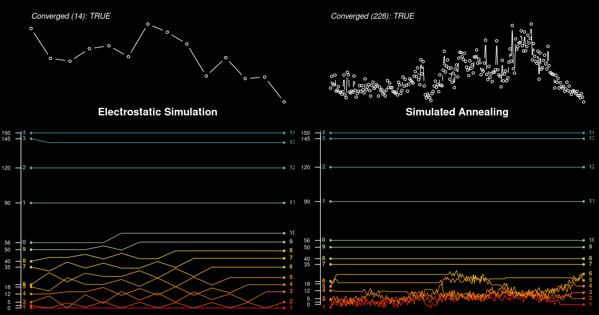
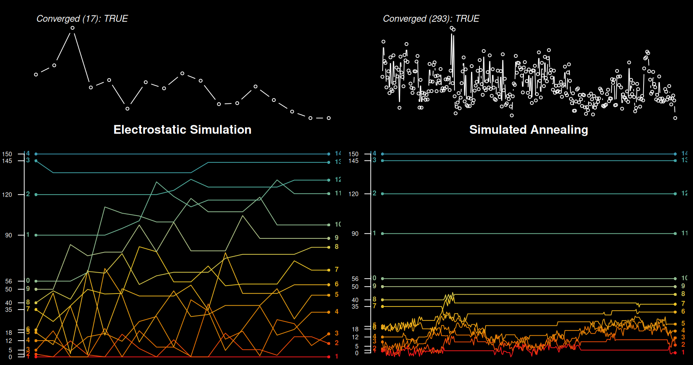
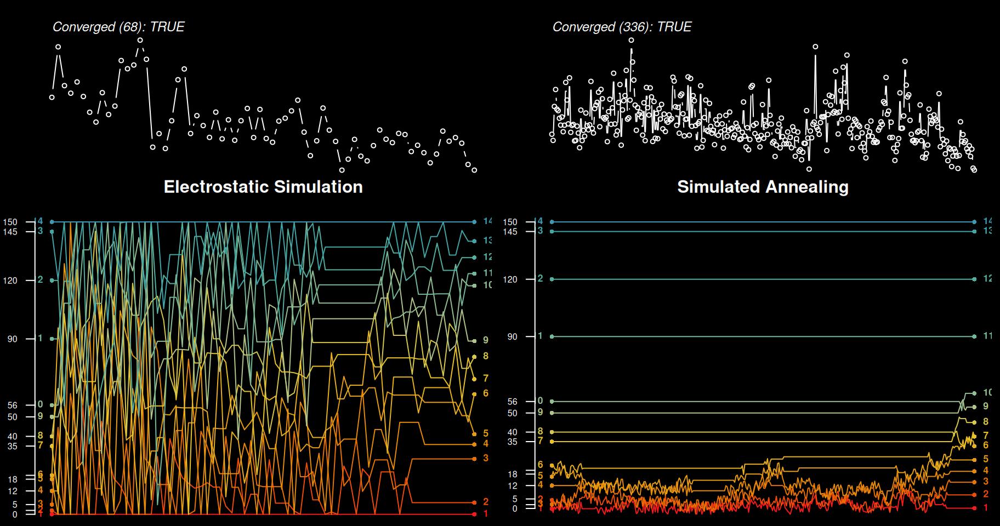
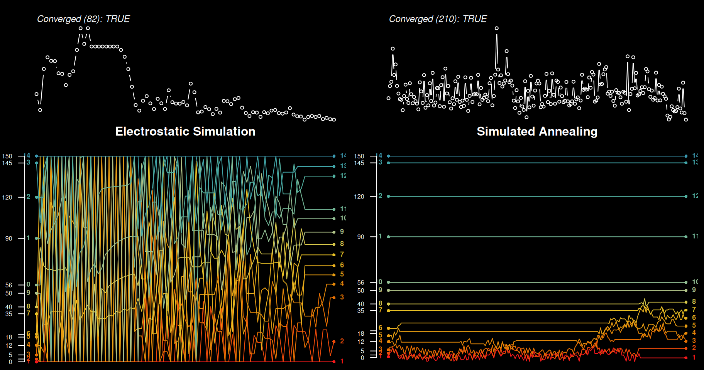
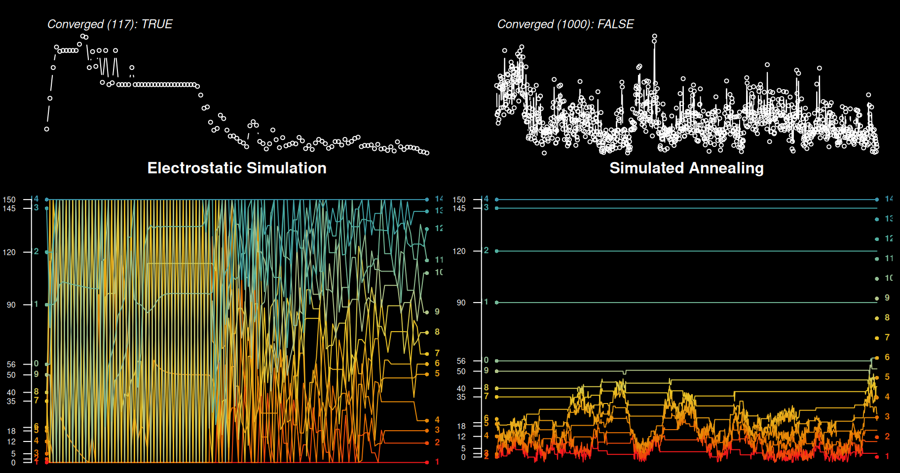

Introduction
The creation of soil profile sketches has been a cornerstone of the {aqp} package since the first CRAN release in 2010. With the addition of horizon depth annotation in 2017 it became clear that some form of label placement adjustment would be required to avoid overlapping annotation. Thin horizons and / or large font sizes almost always lead to overlapping horizon depth labels (see numbers just to the right of horizon boundaries in the figure below).
Version 2.0 of the {aqp} package provides two algorithms for avoiding
overlapping annotation, available in plotSPC() for the
adjustment of horizon depth annotation, and for general use via
fixOverlap(). Within the context of plotSPC(),
overlapping horizon depth labels are flagged according to an overlap
threshold computed from label text height on the current graphics
device.
Consider the following example soil profile sketches, created from a single soil profile template characterized by multiple thin horizons. Simulation and duplication were used to generate multiple copies of the three variations on the original template.
library(aqp)
# soil profile template
x <- quickSPC(
"SPC:Oi|Oe|AAAAA|E1|E2|Bhs1Bhs1Bhs1|Bhs2|CCCCCC|RRRRRRRRRR",
interval = 3
)
# set variability in horizon thickness
horizons(x)$thick.sd <- 3
# setup horizon designations
horizons(x)$nm <- factor(x$name, levels = c('Oi', 'Oe', 'A', 'E1', 'E2', 'Bhs1', 'Bhs2', 'C', 'R'))
# simulate 3 realizations of original profile
set.seed(10101)
s <- perturb(x, n = 3, thickness.attr = 'thick.sd', min.thickness = 2)
# create 3 copies of each simulation
s <- duplicate(s, times = 3)Overlapping horizon depth labels are clear. Note that there are three copies of each simulated variation on the original template.
Selecting the optimal label-adjustment methods and parameters will depend on the collection of profiles, horizonation, profile height, font sizes, and graphics device settings (figure height, resolution).
electrostatic simulation: This is generally the best method, having deterministic solutions that typically move labels as little as possible in fewer iterations. It does not do well with many very thin horizons near the top or bottom of the profile. Very complex profiles and larger font sizes may require setting
qto values larger than 1. Setqto values between 0.25-0.75 to minimize adjustment distances. This method cannot (yet) provide a label adjustment solution in the presence of missing horizon depths or horizons wheretop == bottom.simulated annealing: This method is the most adaptive, typically capable of providing reasonable solutions for even the most complex profiles. The non-deterministic solutions can be undesirable when preparing figures for publication.
Electrostatic Simulation
An electrostatic simulation applies forces of repulsion between
labels that are within a given distance threshold and forces of
attraction to a uniformly spaced sequence. Affected labels are
iteratively perturbed until either no overlap is reported, or a maximum
number of iterations has been reached. Label adjustment solutions are
deterministic and can be controlled by additional arguments to
electroStatics_1D(). The most common adjustment is via
charge density (q). See comparisons below.
Simulated Annealing
This approach makes small adjustments to affected label positions
until overlap is removed, or until a maximum number of iterations is
reached. Rank order and boundary conditions are preserved. The
underlying algorithm is based on simulated annealing. Label placement
solutions are non-deterministic, use set.seed() if
repeatability is important. The “cooling schedule” parameters
T0 and k can be used to tune the algorithm for
specific applications. These additional arguments are passed to
SANN_1D() via fixOverlap().
Note that each solution, within duplicate profiles, is slightly different.
Quick Comparison
Create a very busy profile with lots of possible overlapping horizon depth labels.
x <- quickSPC(
"SPC:Oi|Oe|AAA|E1|E2|E3|BhsBhsBhsBhs|Bt1|Bt2|Bt3Bt3|CCCCCC|Ab1|Ab2|2C2C2C2C2C2C|2Cr|2R2R2R2R2R2R2R2R",
interval = 1
)
x$z <- as.numeric(x$hzID)Set arguments to plotSPC() and define a custom function
to demonstrate various label adjustment settings.
# pretty colors
.bluecolors <- hcl.colors(n = 25, palette = 'Blues')[-25]
# plotSPC arguments
.a <- list(
width = 0.2,
max.depth = 40,
hz.depths = TRUE,
name.style = 'center-center',
cex.names = 1.5,
name = NA,
depth.axis = FALSE,
color = 'z',
show.legend = FALSE,
print.id = FALSE,
col.palette = .bluecolors
)
# set plotSPC default arguments
options(.aqp.plotSPC.args = .a)
# wrapper function to test label collision solutions
testIt <- function(x, ...) {
# make sketches
plotSPC(x, ...)
# a normalized index of label adjustment
.LAI <- get('last_spc_plot', envir = aqp.env)$hz.depth.LAI
.LAI <- ifelse(is.na(.LAI), 0, .LAI)
# annotate with label adjustment index
.txt <- sprintf("LAI: %0.3f", .LAI)
mtext(.txt, side = 1, at = 1, line = -1.5, cex = 0.8)
}Compare and contrast. The “LAI” is an index of label adjustment,
relative to the original label positions. Larger values imply a higher
degree of adjustment. Note that each simulated annealing (SANN) label
adjustment is different, unless randomness is “controlled” using
set.seed().
par(mar = c(1, 0, 0, 0), mfcol = c(1, 8))
testIt(x, fixLabelCollisions = FALSE)
title('No\nAdjustment', line = -3.5, adj = 0.5)
testIt(x, fixOverlapArgs = list(method = 'S'))
title('SANN\nsim 1', line = -3.5, adj = 0.5)
testIt(x, fixOverlapArgs = list(method = 'S'))
title('SANN\nsim 2', line = -3.5, adj = 0.5)
testIt(x, fixOverlapArgs = list(method = 'S'))
title('SANN\nsim 3', line = -3.5, adj = 0.5)
testIt(x, fixOverlapArgs = list(method = 'E', q = 1.5))
title('Electrostatic\nq = 1.5', line = -3.5, adj = 0.5)
testIt(x, fixOverlapArgs = list(method = 'E', q = 1))
title('Electrostatic\nq = 1', line = -3.5, adj = 0.5)
testIt(x, fixOverlapArgs = list(method = 'E', q = 0.5))
title('Electrostatic\nq = 0.5', line = -3.5, adj = 0.5)
testIt(x, fixOverlapArgs = list(method = 'E', q = 0.25))
title('Electrostatic\nq = 0.25', line = -3.5, adj = 0.5)General Cases
The label adjustment functionality can be used outside of the context
of plotSPC(). The function overlapMetics() can
be used to determine overlap within a vector of positions based on a
given distance threshold.
x <- c(1, 2, 3, 3.4, 3.5, 5, 6, 10)
overlapMetrics(x, thresh = 0.5)#> $idx
#> [1] 3 4 5
#>
#> $ov
#> [1] 0.125The fixOverlap() function will attempt adjustment, given
distance threshold and a method selection. Additional parameters are
passed on to SANN_1D() or electroStatics_1D().
The converged attribute is included in the result to
signify that a successful solution was possible. See the manual page for
fixOverlap() for additional details.
# vector of positions, typically labels but could be profile sketch alignment on the x-axis
s <- c(1, 2, 2.3, 4, 5, 5.5, 7)
# simulated annealing, solution is non-deterministic
fixOverlap(s, thresh = 0.5, method = 'S')#> 15 iterations#> [1] 1.000000 2.282630 2.810732 4.000000 5.000000 5.500000 7.000000
#> attr(,"converged")
#> [1] TRUE
# electrostatics-inspired simulation of particles
# solution is deterministic
fixOverlap(s, thresh = 0.5, method = 'E')#> 2 iterations#> [1] 1.000000 1.847048 2.419053 4.000000 5.000000 5.500000 7.000000
#> attr(,"converged")
#> [1] TRUECompare Algorithms
Define a custom function for comparing the extended output from
fixOverlap(..., trace = TRUE) using both electrostatic
simulation (method = 'E') and simulated annealing
(method = 'S').
evalMethods <- function(x, thresh, q, ...) {
cols <- hcl.colors(n = 9, palette = 'Zissou 1', rev = TRUE)
cols <- colorRampPalette(cols)(length(x))
z <- fixOverlap(x, thresh = thresh, method = 'E', maxIter = 100, trace = TRUE, q = q)
.n <- nrow(z$states)
op <- par(mar = c(0, 2, 2, 0.5), bg = 'black', fg = 'white')
layout(matrix(c(1, 2, 3, 4), ncol = 2, nrow = 2), heights = c(0.33, 0.66))
plot(seq_along(z$cost), z$cost, las = 1, type = 'b', axes = FALSE, cex = 0.66, xlim = c(1, .n))
mtext(text = sprintf("Converged (%s): %s", .n, z$converged), at = 0, side = 3, line = 0, cex = 0.75, font = 3, adj = 0)
matplot(rbind(x, z$states), type = 'l', lty = 1, las = 1, axes = FALSE, col = cols, lwd = 1)
points(x = rep(1, times = length(x)), y = x, cex = 0.66, pch = 16, col = cols)
points(x = rep(.n + 1, times = length(x)), y = z$x, cex = 0.66, pch = 16, col = cols)
text(x = 1, y = x, col = cols, labels = seq_along(x), cex = 0.66, font = 2, pos = 2)
text(x = .n + 1, y = z$x, col = cols, labels = seq_along(x), cex = 0.66, font = 2, pos = 4)
axis(side = 2, at = unique(x), labels = round(unique(x), 1), col.axis = par('fg'), las = 1, cex.axis = 0.6)
title(main = 'Electrostatic Simulation', line = 1, col.main = 'white')
## SANN_1D doesn't always preserve rank ordering
## ->> not designed to use unsorted input
## ->> maybe impossible with ties in x?
z <- fixOverlap(x, thresh = thresh, method = 'S', trace = TRUE, maxIter = 1000)
.n <- nrow(z$states)
plot(seq_along(z$stats), z$stats, las = 1, type = 'b', axes = FALSE, cex = 0.66, xlim = c(1, .n))
mtext(text = sprintf("Converged (%s): %s", .n, z$converged), at = 0, side = 3, line = 0, cex = 0.75, font = 3, adj = 0)
matplot(z$states, type = 'l', lty = 1, las = 1, axes = FALSE, col = cols)
points(x = rep(1, times = length(x)), y = z$states[1, ], cex = 0.66, pch = 16, col = cols)
points(x = rep(.n, times = length(x)), y = z$x, cex = 0.66, pch = 16, col = cols)
text(x = 1, y = z$states[1, ], col = cols, labels = seq_along(x), cex = 0.66, font = 2, pos = 2)
text(x = .n, y = z$x, col = cols, labels = seq_along(x), cex = 0.66, font = 2, pos = 4)
axis(side = 2, at = unique(x), labels = round(unique(x), 1), col.axis = par('fg'), las = 1, cex.axis = 0.6)
title(main = 'Simulated Annealing', line = 1, col.main = 'white')
# reset graphics state
par(op)
layout(1)
}The top panels represent the objective function, smaller values are
better. Bottom panels illustrate perturbations to elements of the
position vector x. Larger values of charge density
q are required applying the electrostatic simulation method
to increasingly complex problems (e.g. larger thresholds, more overlap).
However, setting q too high will result in chaos and
failure to converge.
# explore effect of charge (q)
# too large -> chaos
x <- c(0, 2, 5, 12, 18, 20, 35, 40, 50, 56, 90, 120, 145, 150)
# just about right, very few perturbations required
evalMethods(x, thresh = 5, q = 1.1)
# ok, but now most label positions are affected
evalMethods(x, thresh = 5, q = 1.8)
# too high, wasting time on more iterations
evalMethods(x, thresh = 5, q = 3)
# far too high, wasting more time with little gain
evalMethods(x, thresh = 5, q = 4)
# chaos and failure to converge
evalMethods(x, thresh = 5, q = 5)
Additional examples to tinker with.
# threshold too large
evalMethods(x, thresh = 10, q = 3)
# large threshold
x <- c(0, 5, 12, 18, 20, 35, 40, 55, 90, 120, 145, 150)
evalMethods(x, thresh = 9, q = 2)
# single iteration enough
x <- c(0, 3, 20, 35, 40, 55, 90, 120, 145, 150)
evalMethods(x, thresh = 6, q = 1)
# clusters
x <- sort(c(0, jitter(rep(10, 3)), jitter(rep(25, 3)), jitter(rep(90, 3)), 150))
evalMethods(x, thresh = 6, q = 3)
evalMethods(x, thresh = 6, q = 2)
## impact of scale / offset
x <- c(0, 5, 12, 18, 20, 35, 40, 50, 120, 145, 150)
# works as expected
evalMethods(x, thresh = 5, q = 1.1)
# works as expected, as long as threshold is scaled
evalMethods(x / 10, thresh = 5 / 10, q = 1.1)
# works as expected, as long as threshold is scaled
evalMethods(x * 10, thresh = 5 * 10, q = 1.1)
# all work as expected, threshold not modified
evalMethods(x + 10, thresh = 5, q = 1.1)
evalMethods(x + 100, thresh = 5, q = 1.1)
evalMethods(x + 1000, thresh = 5, q = 1.1)
# works as expected
x <- c(315, 325, 341, 353, 366, 374, 422)
fixOverlap(x, thresh = 9.7, q = 1, method = 'E')
evalMethods(x, thresh = 9.7, q = 1)
x <- c(1.0075, 1.1200, 1.3450, 1.6450, 1.8700, 1.8825)
fixOverlap(x, thresh = 0.05442329, q = 1)
evalMethods(x, thresh = 0.05442329, q = 1)Learning More about the SANN Algorithm
Define a custom function for visualizing the extended output from
fixOverlap(..., method = 'S', trace = TRUE).
tracePlot <- function(x, z, cex.axis.labels = 0.85) {
# setup plot device
op <- par(mar = c(4, 4, 1, 1), bg = 'black', fg = 'white')
layout(matrix(c(1,2,3)), widths = 1, heights = c(1,1,2))
# order:
# B: boundary condition violation
# O: rank (order) violation
# +: accepted perturbation
# -: rejected perturbation
cols <- c(grey(0.5), grey(0.85), 'royalblue', 'firebrick')
cols.lines <- hcl.colors(9, 'Zissou 1', rev = TRUE)
cols.lines <- colorRampPalette(cols.lines)(length(x))
# total overlap (objective function) progress
plot(
seq_along(z$stats), z$stats,
type = 'h', las = 1,
xlab = 'Iteration', ylab = 'Total Overlap',
axes = FALSE,
col = cols[as.numeric(z$log)]
)
axis(side = 2, cex.axis = cex.axis.labels, col.axis = 'white', las = 1, line = -2)
mtext('Overlap', side = 2, line = 2, cex = cex.axis.labels, font = 2)
# deviation from original configuration
plot(
seq_along(z$stats), z$ssd,
type = 'h', las = 1,
xlab = 'Iteration', ylab = 'Deviation',
axes = FALSE,
col = cols[as.numeric(z$log)]
)
axis(side = 2, cex.axis = cex.axis.labels, col.axis = 'white', las = 1, line = -2)
mtext('Deviation', side = 2, line = 2, cex = cex.axis.labels, font = 2)
legend('top', legend = c('boundary\nviolation', 'rank\nviolation', 'accepted\nperturbation', 'rejected\nperturbation'), col = cols, bty = 'n', horiz = TRUE, inset = -0.5, lty = 1, lwd = 2, xpd = NA)
# adjustments at each iteration
matplot(
z$states, type = 'l',
lty = 1, las = 1,
xlab = 'Iteration', ylab = 'x-position',
axes = FALSE,
col = cols.lines
)
axis(side = 2, cex.axis = cex.axis.labels, col.axis = 'white', las = 1, at = x, labels = round(x, 1))
axis(side = 4, cex.axis = cex.axis.labels, col.axis = 'white', las = 1, at = z$x, labels = round(z$x, 1), line = -2)
mtext('Position', side = 2, line = 2.5, cex = cex.axis.labels, font = 2)
axis(side = 1, cex.axis = 1, col.axis = 'white', line = 0)
mtext('Iteration', side = 1, line = 2.5, cex = cex.axis.labels, font = 2)
par(op)
layout(1)
}A relatively challenging example.
x <- c(0, 1, 2, 2.2, 2.8, 3.5, 6, 8, 10, 10.1, 12.8, 13, 14.8, 15, 15.5)
# fix overlap, return debugging information
set.seed(10101)
z <- fixOverlap(x, thresh = 0.73, method = 'S', trace = TRUE)#> 160 iterations
# check convergence
z$converged#> [1] TRUE
# inspect algorithm trace
tracePlot(x, z)
# trace log
# B: boundary condition violation
# O: rank (order) violation
# +: accepted perturbation
# -: rejected perturbation
table(z$log)#>
#> B O + -
#> 22 71 64 2A very challenging example.
# fix overlap, return debugging information
set.seed(101010)
x <- sort(runif(10, min = 2.5, max = 3.5))
# widen boundary conditions
z <- fixOverlap(x, thresh = 0.2, trace = TRUE, min.x = 0, max.x = 10, maxIter = 2000, adj = 0.05)#> 1203 iterations
# check convergence
z$converged#> [1] TRUE
# inspect algorithm trace
tracePlot(x, z)
Cleanup.
# reset plotSPC() options
options(.aqp.plotSPC.args = NULL)